1. Olbrzymie połacie ogromnych, dziewiczych lasów

 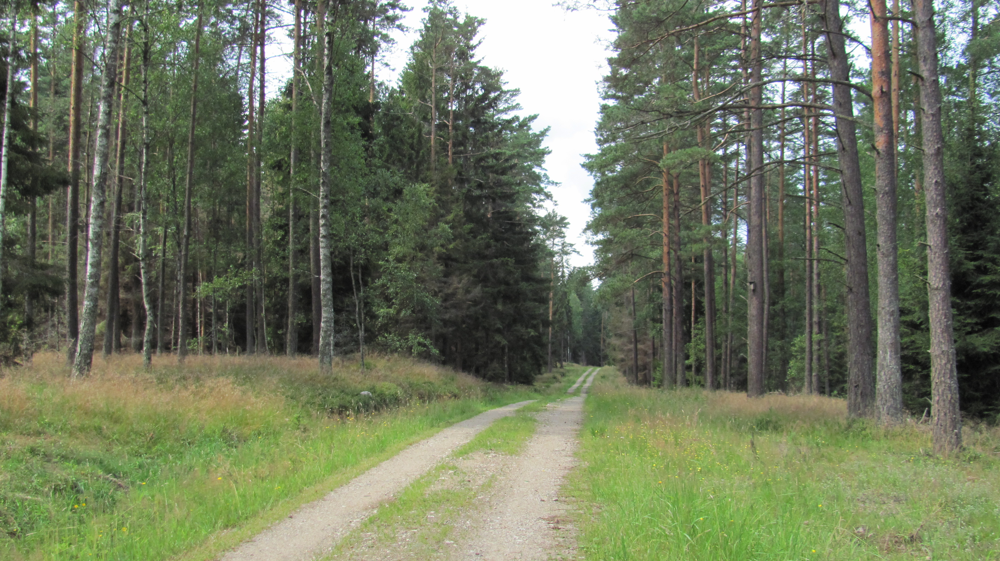
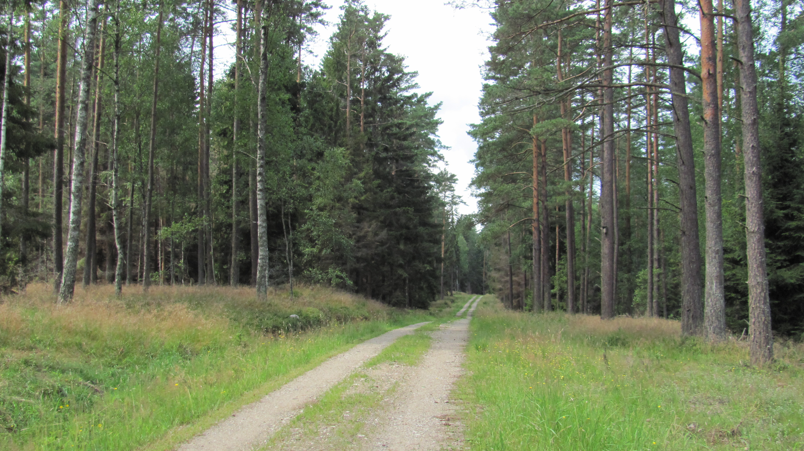


Woj. pomorskie zajmuje trzecie miejsce w Polsce pod względem zalesienia - aż 36% (tj. ok. 6 600 km2) jego powierzchni to lasy!
2. Morze Bałtyckie
 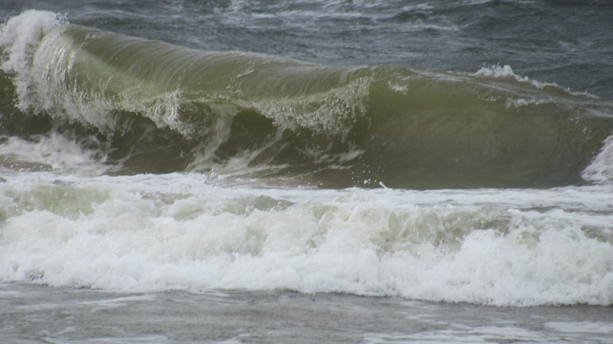
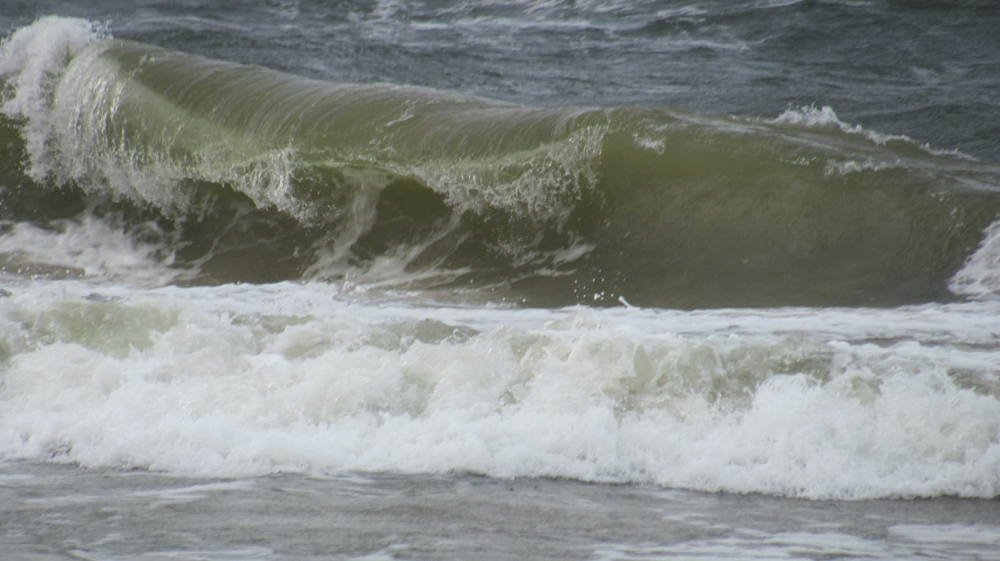

Niewątpliwym atutem dla fanów pływania i plażowania jest Morze Bałtyckie - wschodnia część polskiego wybrzeża znajduje się właśnie na Kaszubach.
3. Wyjątkowe bogactwo flory i fauny


 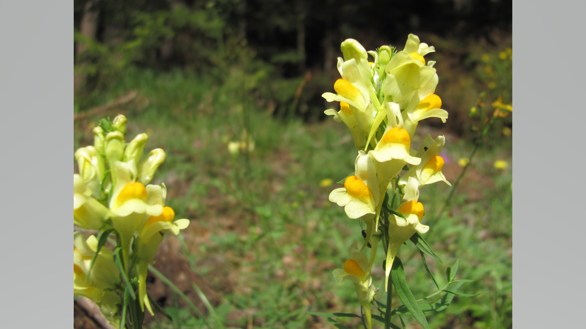
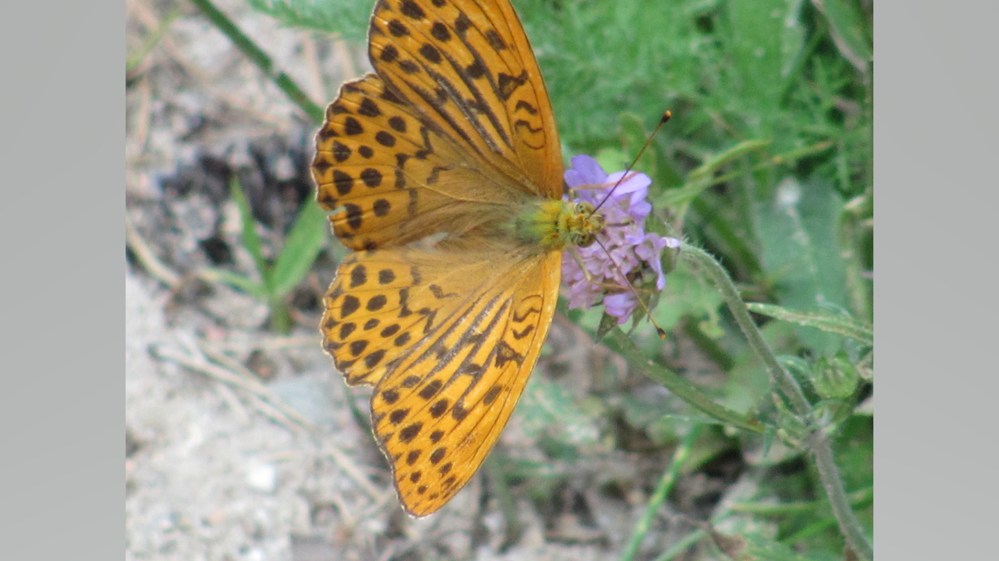
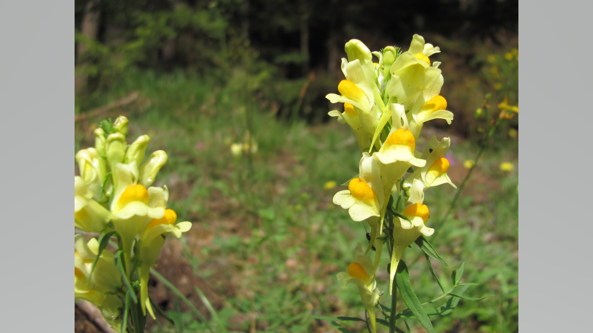
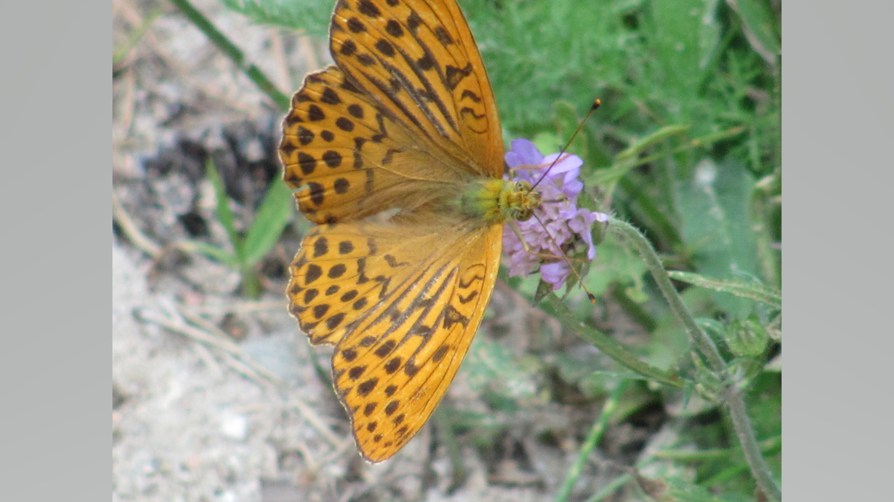
 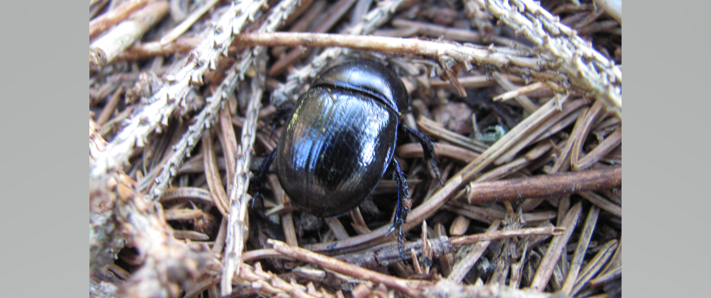
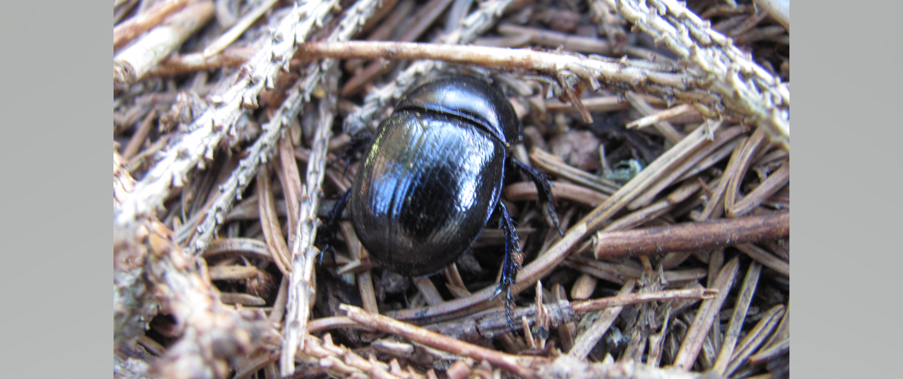


 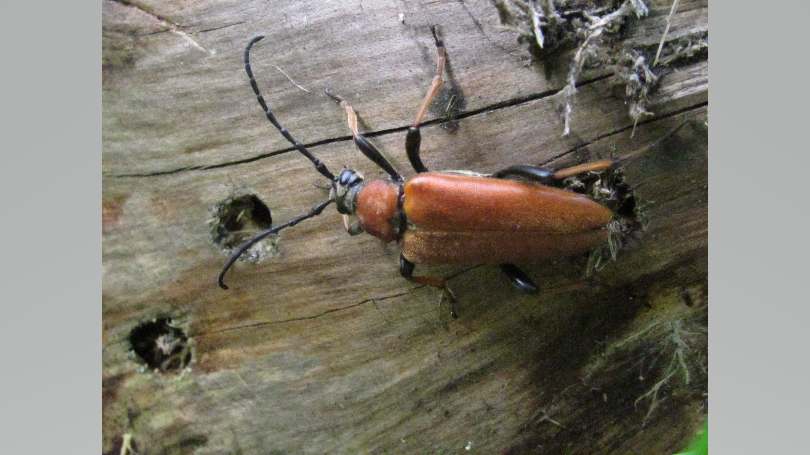
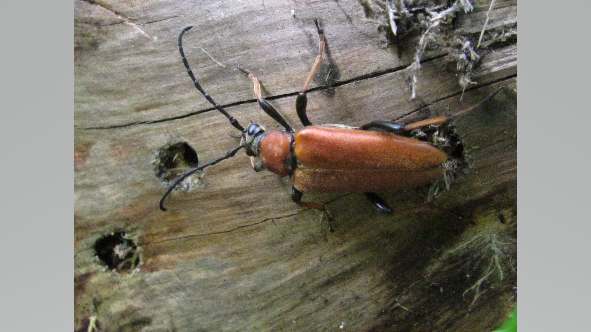
 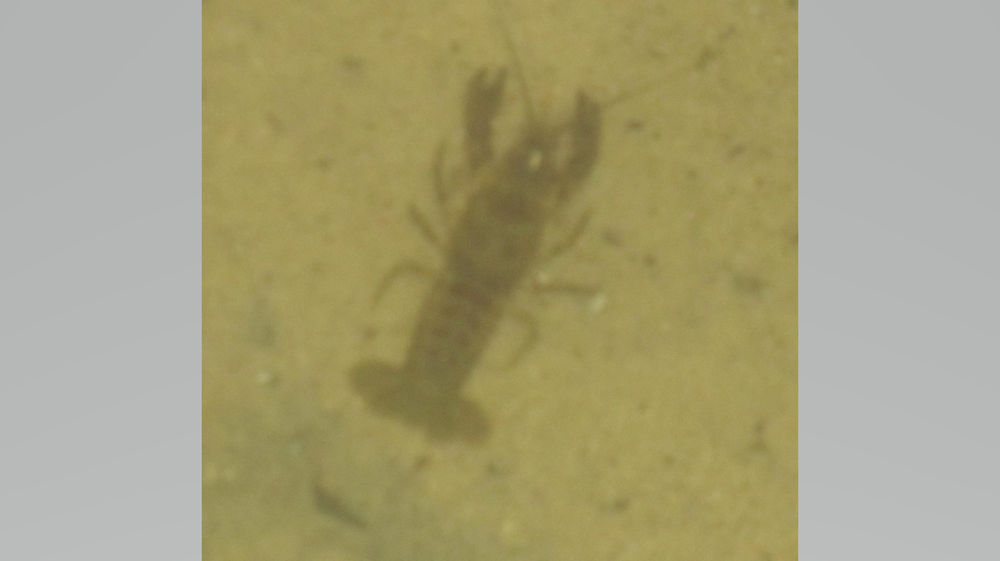
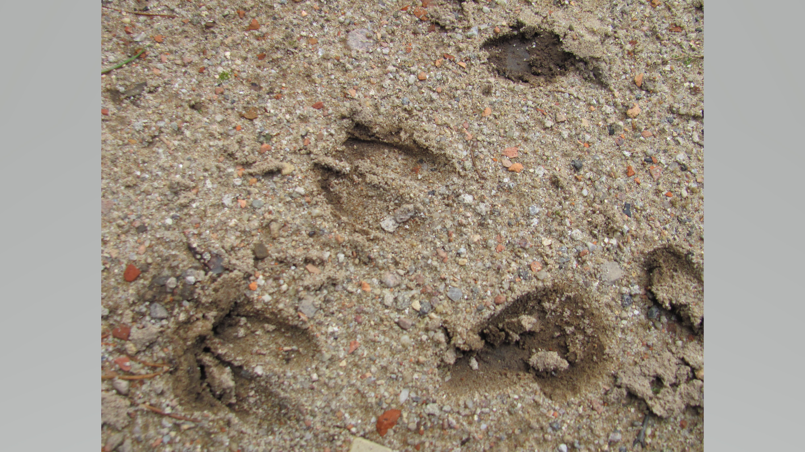
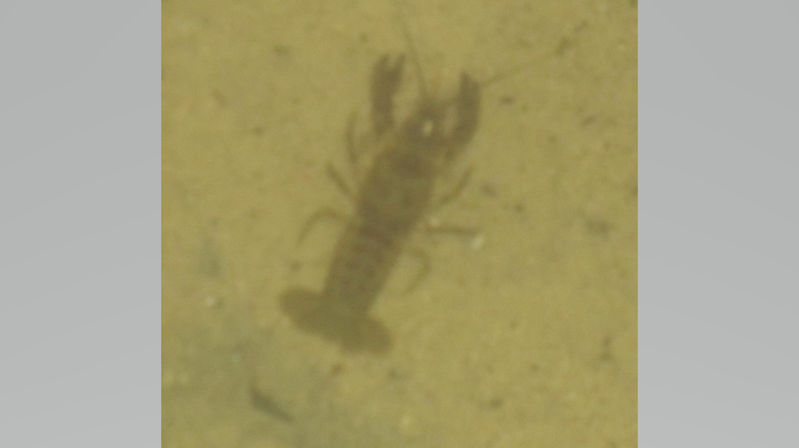
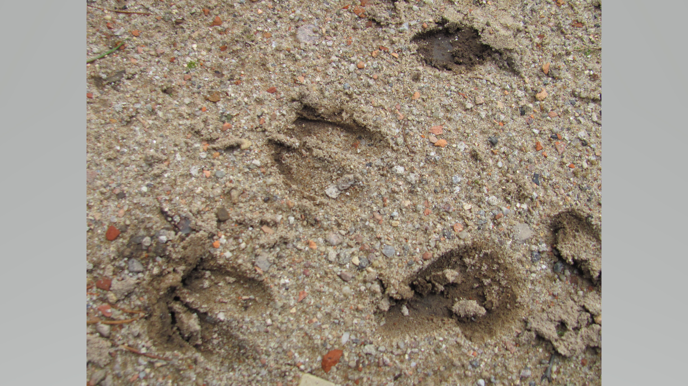
Na Kaszubach często spotyka się wiele rzadkich gatunków zwierząt, takich, jak żuraw (jego obecność dowodzi czystości środowiska, jako, że ptaki te wybierają wyłącznie nieskażone tereny na swoje siedliska), czapla siwa, kruk zwyczajny, bociany, łabędzie krzykliwe i małe. Kaszubska flora składa się głównie z lasów mieszanych. Można spotkać tam buki, wiązy, graby, olchy, jesiony, czy sosny.
4. Mnóstwo zabytków kultury


Kaszuby to bardzo bogaty kulturowo region. Powszzechnie znany Żuraw Gdański, czy Skansen w Szymbarku to właśnie Kaszuby. No i nie należy zapominać, że sam język kaszubski, tudzież kaszubskie stroje i obyczaje to zabytki same w sobie.
5. Niezliczone ilości kryształowo czystych jezior


Na terenie Pojezierza Kaszubskiego znajduje się aż 500 jezior, co stanowi 3.5% jego powierzchni! Nie może się to, co prawda, równać z Pojezierzem Mazurskim (2600 jezior zajmujących 7% powierzchni), jednak to wciąż duża liczba.
6. Zapierające dech w piersiach krajobrazy
 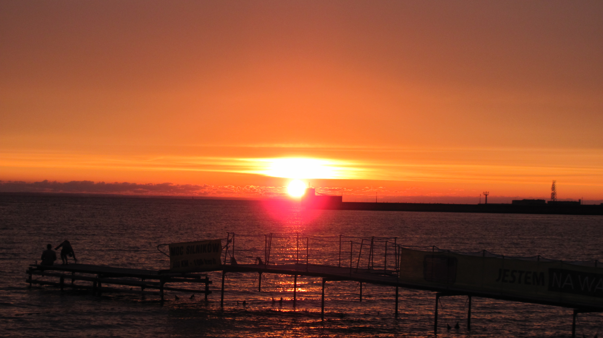
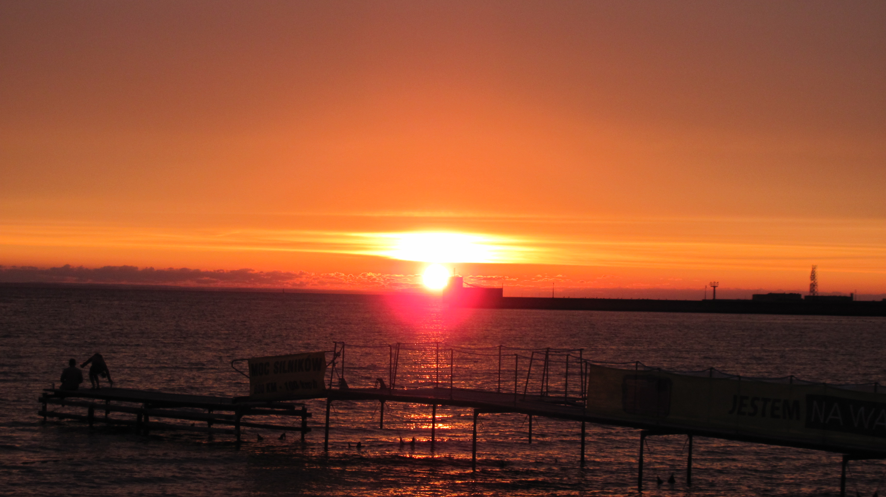


Na Kaszubach nietrudno o przepiękne krajobrazy. Ponieważ powietrze jest tam czyste, a zanieczyszczenie świetlne niewielkie, szczególnie dobrze widoczne są tam rzadkie zjawiska nocne, takie jak Krwawy Księżyc, czy deszcze meteorytów.
7. Cisza i spokój...

Kaszuby są idealnym miejscem, żeby odpocząć od miejskiego zgiełku. Czyste jeziora, zielone lasy, ćwierkanie ptaków, niewielki stopień urbanizacji. Nie należy jednak myśleć, że Kaszuby to miejsce pośrodku niczego. Nie brakuje tam centrów handlowych ani większych miast. W przeważającej jednak większości Kaszuby to przyroda i wszystkie cuda, jakie oferuje.